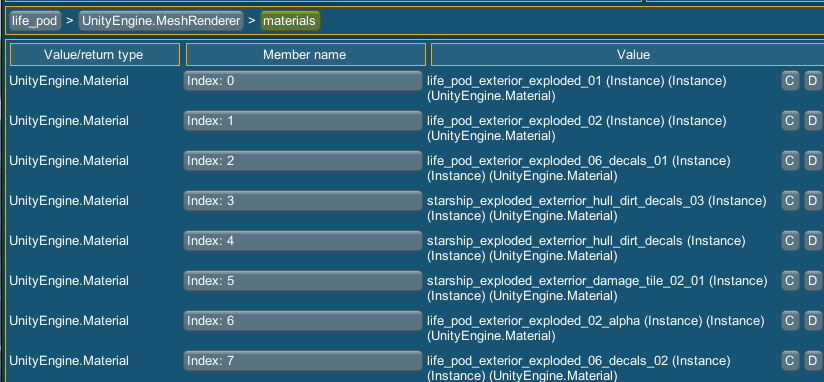
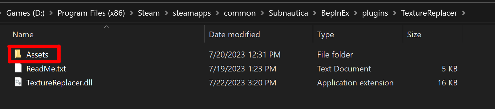

Adding lifepod texture configs
It is highly recommended that you view the custom config tutorial before this one.
Most of the config is the same layout as custom configs, but there are some differences.
The main diferrence is that you don't need the classID or rendererHierarchyPath.
Instead you need to put in a lifepodIndex.
The lifepod index goes from 0 to 8, where index 0 is lifepod 2, index 1 is lifepod 3, etc.
Keep in mind that the lifepod numbers don't go straight from 2 to 10.
Here is a list of the lifepod numbers in order with their indexes:
Lifepod 2 - Index 0
Lifepod3 - Index 1
Lifepod4 - Index 2
Lifepod6 - Index 3
Lifepod7 - Index 4
Lifepod12 - Index 5
Lifepod13 - Index 6
Lifepod17 - Index 7
Lifepod19 - Index 8
Here are all the materials you can replace using the current setup:

Here is an example of a lifepod config:
[
{
"lifepodIndex": 0,
"configName": "My config name here",
"materialIndex": 0,
"fileName": "My file name here",
"isVariation": false,
"variationChance": -1.0,
"linkedConfigNames": [
"Linked name 1"
]
}
]
IMPORTANT:
As with the custom configs you must put the JSONs into the Assets folder.
